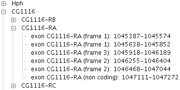
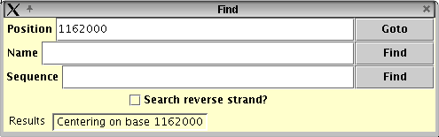

Note: if you want to run Apollo from the command line, it will not be able
to control which version of the Java virtual machine your Mac defaults
to using (as it does if you run the installed Apollo). Please make sure that you are set up to use JDK version 1.5 or 1.6,
rather than 1.3, which is the default on some older Macs.
The first view of Apollo
When Apollo starts up you should see the Apollo splashscreen, which will stay up for a few seconds while the Apollo software loads.
You should then see a window offering various ways to find the region you are interested in. These will be discussed shortly.
Text output from Apollo
Sometimes it's important to see the text output from Apollo--the messages it prints to inform the user about what it's doing. This is particularly true if something's not working right and you want to report a bug. Both standard output (stdout) and standard error (stderr) messages are captured into log files. They are located at:$APOLLO_ROOT/logs/stdout.log
$APOLLO_ROOT/logs/stderr.log
where $APOLLO_ROOT is the location where Apollo was installed. Note that stdout/stderr are only captured into log files if you installed Apollo with the installer program. If you are running Apollo directly from the source code, stdout/stderr won't be redirected and will display on the terminal where you're invoking Apollo from.
Loading Data
Reading data from a file
The oldest and, in many ways, most fully-functional data adapter in Apollo is the GAME XML adapter. The simplest way to try out Apollo is to choose the GAME XML adapter from the "Choose data source" start screen, and load data/example.xml (a GAME XML file that contains computational results and curated annotations for a region of the D. melanogaster genome), which is included with the Apollo distribution.Reading Drosophila annotation data
The annotations on the Drosophila melanogaster genome are now stored in a version of the Chado XML format. Drosophila annotation data in Chado XML format can be read from a file or pulled transparently across the network from the FlyBase annotation database.Apollo provides several ways to search for the Drosophila region you are interested in:
- Filename (e.g., data/CG16983.chado.xml)--filenames can use absolute or relative
paths (relative paths are taken to refer to files inside the Apollo directory). Please
note that if you use the Browse button to select a file, you still need to hit the "Ok"
button to begin loading the file. (You can also enter an URL as a
filename.)
A quick tip about the file chooser that is invoked by the Browse button: by default, it comes up in a mode where you scroll horizontally to see all the available directories and files. If you prefer vertical scrolling, click on the icon at the top right of the chooser window, which looks like two little squares, each followed by a line.
- Gene name (e.g., cact)--finds the region surrounding the gene
- Cytological band (e.g., 40B). Warning: these are big and use up a lot of memory.
- Location: chromosome arm, start and end position (e.g., 3R 100000 300000)
By clicking on the tabs labeled "Gene", "Cytology", etc., you can decide how you want to look for the region of interest. Note that the FlyBase server will return the scaffold (~350Kb region) that is closest to your query, not the precise region you requested.
Note that except for the "File" search, all the searches go over the network to get the Drosophila annotations from the FlyBase server, so you must be connected to the internet to use them. Sometimes it takes a while to fetch the data across the internet. Sometimes, the database is down, or is so overloaded that you will get a message saying "can't connect to URL". Another possible cause of that message is that you might have a firewall that prevents the data from getting to your computer. If you use a proxy, be sure to set the proxy by clicking the "Proxy settings" button before trying to load data.
If you'd like to download all the FlyBase Drosophila annotation data to your computer so you can then access it locally via the File tab, please visit http://flybase.bio.indiana.edu/annot/.
Reading Chado XML or GAME XML files
The Chado XML adapter lets you read and write FlyBase-style Chado XML files with no macros. A sample Chado XML file containing some Drosophila annotations, data/CG16893.chado.xml, is included with the Apollo distribution.The Chado XML adapter has not yet been generalized for use with non-FlyBase data. Also, it cannot yet handle macros, and it doesn't yet deal with some types of "non-Apollo" data such as feature_cvterms. Theoretically, you can use Apollo as a converter between Chado XML and GAME, but we are still debugging that conversion. Please see doc/todo for a list of known issues with the Chado XML adapter.
The GAME XML adapter was written to handle Drosophila data in the older GAME XML format. You should be able to use it to read other types of annotation data in GAME XML format, but you will need to change the tiers file.
You can also write out two different GAME XML versions (1.0 and 1.1). This is configurable in style--set DO_ONE_LEVEL_ANNOTS "false" makes it save 1.0, otherwise it saves 1.1.
Reading data directly from a Chado database
The Chado JDBC adapter allows Apollo to read annotation data directly from a Chado database. Using this adapter to read data from your Chado database will require modification of some configuration files.If you want to try reading Drosophila annotations from the FlyBase Chado server (which might or might not still be running), select "Chado" from the data adapter list. There is only one database to choose: "FlyBase Chado Indiana public server". You can then choose "Type of Region" to be either "gene" or "golden_path_region." golden_path_region is a scaffold (it's the Sequence Ontology term for a scaffold). In the "Region ID" box, enter the gene name (if you selected type gene) or scaffold ID (if you selected golden_path_region). An example of a fruitfly gene is "cact". An example scaffold ID is AE003603.
The Chado adapter has known bugs that are described in doc/chado/chado-jdbc-todo. For example, if you request a region that doesn't exist, Apollo will seize up. Also the dashed contig result lines that are present from the GAME Adapter are not coming up yet. See chado-jdbc-todo for the full listing.
Also, if you ask the server for data by chromosome region (e.g., 2L:10000-20000), you may get an entire scaffold that includes the requested gene or region--not the actual region requested. This is a bug in the server, not Apollo (as of v. 1.6.5).
The Chado data adapter can do direct-to-database writeback. It converts the transactions to updates to the chado database, so only edited features are updated in the database. Currently this is working with the Chado Rice database (at Cold Spring Harbor). Adapting it to other Chado databases shouldn't be too hard.
If you are a developer who wants to enable Apollo to access your own Chado database, please see the section about customizing the Chado adapter.
Reading Ensembl GFF files
GFF format is a simple format for transferring genomic annotations. A version of GFF (Ensembl GFF) is used at the Sanger Institute for storing the human annotations.To read in an Ensembl GFF file, choose the "Ensembl GFF" option from the data adapter menu. You can type your GFF file name in the text box or press the Browse button to bring up a file chooser. You can also enter a FASTA-format sequence file name to go with the GFF data. When you're ready, press the OK button and the GFF file (and sequence file, if you specified one) will be read in and the features displayed.
If any of the features in the GFF file have types that are not recognized by Apollo they will be given a default pale yellow color. This can be changed in the Preferencessection.
Please note that there is more than one flavor of GFF, and Apollo only supports the Ensembl flavor (as described here). Apollo does not understand the Artemis flavor of GFF.
Also note that Ensembl GFF format is not rich enough to support curated annotation, so even if you turn on editing, you will not be able to create and save curated annotations on GFF-format data.
Finally, note that although theoretically Apollo can be used to convert between data formats (e.g. GFF <-> GAME), in practice this is not foolproof.
Reading GFF3 files
GFF3 format is the current generation of a simple format for transferring genomic annotations.To read in an GFF3 file, choose the "GFF3 format" option from the data adapter menu. You can type your GFF3 file name in the text box or press the Browse button to bring up a file chooser. You must either provide the sequence data in FASTA format or you will need to have the FASTA data embedded in the GFF3 file. For the first option, make sure that "Embedded FASTA in GFF" is not checked and enter the FASTA file to go with the GFF3 data (you can browse for the file as well). For the second option, make sure that "Embedded FASTA in GFF" is checked. This will disable the "Sequence file" selection. When you're ready, press the OK button and the GFF3 file and sequence data will be read in and the features displayed.
If any of the features in the GFF3 file have types that are not recognized by Apollo they will be given a default pale yellow color. This can be changed in the Preferencessection.
Reading Ensembl schema databases
The Ensembl project has created public MySQL databases of annotated genomes for many species - at time of writing this list includes human, mouse, mosquito, rat, zebrafish, and fugu. Each species is stored in a separate, publicly accessible database. The Ensembl adapter can read these databases, as well as any other ensembl-schema MySQL database. The Ensembl project's databases are at ensembldb.sanger.ac.uk, port 3306, accessible as user "anonymous".To directly read Ensembl databases, use the File->Open menu as usual, and choose "EnsJ - Direct Access for Ensembl Databases (Schema 32 and above)" from the pulldown (note that it may freeze up briefly as it sets up its configuration).
The EnsJ adapter is initially set to retrieve data from the Homo sapiens database at the ensembldb site, but because the database name changes frequently, the name that is hardcoded in the default Apollo history may no longer be valid. If you have trouble bringing up the EnsJ adapter, try removing your Apollo history (.apollo/apollo.history) and restarting Apollo. Note that the list of databases may include some with schemas prior to the current one; if you try to read data from those, you will probably get an inscrutable error message.
After selecting a database (if the default one didn't work), you can select a region to look at. The "Location" menu allows you to choose a specific gene to view: either by stable id (e.g. "ENSG00000187981"), or by specifying a region of the chromosome (e.g. "Coordinate System: Chromosome (Version NCBI 35), SeqRegion: Chromosome 6, from 500,000 to 1,000,000"--choose "chromosome--NCBI35" for the coordinate system, "6" for the seq region name, and 500000-100000 for start-end).
To try out the EnsJ adapter, click the History pulldown list and select one of the pre-set regions. The relevant fields will be filled in appropriately, so you can just hit "Ok" at the bottom of the window to load the data.
Note that if you already had run a previous version of Apollo and thus have an apollo.history file in your .apollo directory, the pre-set EnsJ examples may not work right. You can fix this by removing .apollo/apollo.history (so that the new default history takes its place) or by filling in the spaces in the Data Source panel by hand (see the next subsection).
Ensembl features are categorised into various types. In order to see any of these types in the region you loaded, you must expand the "Types" panel by pushing the "Show/Hide Types" button. You will see the following:
The numbers beside each type (e.g., Genes (34270)) are the number of features of that type in the whole Ensembl database. Select the types of features you want to see ("Genes" is a good starting point). You must select something from this panel. At this point you should be ready to read data with the default data source configuration (human data at the public servers on ensembldb). You can hit the "OK" button on the dialog, and Apollo will bring up the selected annotations in your chosen region.
The "Types" button beside each feature type (eg "Gene Types...") will show a list of the different types of genes in the Ensembl database. For instance, in the homo sapiens database, there are many types such as protein_coding_KNOWN_ensembl and pseudogene_NOVEL_ensembl. These types can be loaded individually by selecting them from this list which is sorted alphabetically. If no types are selected, all types will be loaded.
Data Source Configurations
The Databases panel specifies where the ensembl database lives, and how to access it. We have set it up with some defaults, which should allow you to read human data "out of the box", but you might want to read ensembl data from some other species, or set up your own ensembl databases.
Host: The name of the host on which the ensembl databases live. The publicly accessible site (ensembldb.sanger.ac.uk) is defaulted in this field. If you set up your own ensembl database, or can see another ensembl database nearby, then you will change this field.
Port: The port on which the database is "listening" for requests. For MySQL, this port is 3306 by default.
User: Who Apollo should log in as. The databases on ensembldb all have "anonymous" as the user.
Password: The public ensembl databases on ensembldb have no password for the user "anonymous", so you can leave this field blank.
Ensembl Database Name: This dropdown is only populated when you
attempt to open it. It shows all the ensembl databases available on the
selected host. You, the user, must make an appropriate choice in this
field appropriate to the value of the "Data Source" dropdown. We have
defaulted the database to the current human core database
("homo_sapiens_core_32_35e" at time of writing).
Please note: the set of available ensembl databases is constantly changing, and your history may include databases that are no longer available, which can make the EnsJ adapter refuse to come up. If this seems to be happening to you, remove your ~/.apollo/apollo.history and try restarting Apollo.
Loading and saving manual annotations - otter format
This functionality is still being redeveloped for the new EnsJ adapter.Reading cross-species comparative data
The still-under-development Synteny viewer in Apollo lets you view comparative analyses between two genomes. There are several ways to read synteny data; currently, the default is GAME synteny, for which a pair of example files has been included with the Apollo distribution. Please see the GAME Synteny user guide for more information.Reading GenBank or EMBL format
Apollo can now read GenBank and EMBL format from files or directly over the network (given an accession number). GenBank format looks like this:
LOCUS AY308719 1036 bp DNA linear VRT 31-MAY-2004
DEFINITION Parus elegans mindanensis FMNH 357569 cytochrome b gene, partial
cds; mitochondrial gene for mitochondrial product.
ACCESSION AY308719
...
FEATURES Location/Qualifiers
source 1..1036
/organism="Parus elegans mindanensis"
EMBL format looks like this:
ID DME9736 standard; genomic DNA; INV; 7411 BP. XX AC AJ009736;
We are still working on this adapter. In particular, reading as GenBank or EMBL and then saving in GenBank format doesn't perfectly preserve everything from the original source.
When you save in GenBank format, you have a choice of saving in a normal human-readable GenBank file (as in the example above) or in tabular format, which is mostly used for submitting data to GenBank. If you want to save in tabular format, you must supply a directory name, not a file name; multiple files will be saved in the directory. To save in human-readable GenBank format, supply a file name.
Reading raw analysis results
The analysis adapter (called "Computational analysis results" in the data loader menu) is one of the newest additions to Apollo; it still is in progress and has many bugs, but we hope to have it working better soon. It allows you to import raw analysis results into Apollo, view them in Apollo's graphical environment, and choose results to form the basis of curated annotations. This can be a good entry point for using Apollo to annotate your sequences, particularly if you don't have an easy way to get your data into Chado XML or GAME XML format. (However, keep in mind that you are responsible for running your own sequence analyses--Apollo does not and will not act as a "back end" and run the analyses itself, because they are too system-dependent.)Different tabs in the analysis adapter allow you to import various types of analysis results on your sequence:
- BLAST
- sim4
- blat
- FgenesH
- Genscan
- tRNAscanSE
- RepeatMasker
At the moment, many of the analysis parsers are not working right. Some of the sequence analysis programs, such as BLAT, seem to have changed their output format since the Apollo parsers were written. The BLAST and Genscan parsers seem to be the best ones right now. Stay tuned for more documentation and improved performance. In the meantime, if you have questions about the analysis adapter, please contact the Apollo mailing list.
The BLAST parser offers many filtering options. In most cases, you can just leave those alone. We hope in the future to reduce the complexity of the options.
Loading BLASTN results
There are many different variations of BLAST format. The two main flavors of BLAST are NCBI BLAST and WU-BLAST. Theoretically, Apollo's BLAST parser should figure out which BLAST flavor the input is and parse it correctly; in practice, even minor variations in BLAST output syntax can cause the parser to fail. As of August 2005, the parser seems to be working pretty well on NCBI BLASTN 2.2.11 output from the NCBI blast server (http://www.ncbi.nlm.nih.gov/blast/Blast.cgi). (This link is also available on Apollo's Links menu.)Select "chromosomes" as the database. You can select an organism or category of organisms in the Options section. Be sure the last pulldown list on the first row of the Format section says "Plain text". When you save the BLAST hits, be sure to save as plain text (not HTML). Note that some Web browsers leave bits of HTML markup in the text even when you ask to save as text; another way to save the BLAST results that might work better is to select all the BLAST result text in the browser window (some browsers have "Select all" under the Edit menu), copy it, and paste it into a plain text file (be sure the lines don't wrap).
Layering data
Some of the data adapters are able to "layer" features that are from the same genomic region. For example, you might have separate files of annotations and evidence in GAME or ChadoXML format. Use the "Layer more results or annotations" from the File menu to add more features on top of what you've already loaded. This only makes sense if the new data is from the same genomic region--if it's from a different region, you will probably get a blank popup error box.Another popular use of the layering option is to add new analysis results for the current region--for example, maybe you BLASTed the currently displayed genomic sequence against a new database, and want to see the results displayed along with the other evidence. To do this, use the "Layer more results or annotations" command from the File menu, and choose the "Computational analysis results" data loader from the pulldown list under "Choose data source".
If you are preparing your own data files for layering, please note that you must identify the genomic region (e.g. chromosome arm) in each file (even if you don't include the sequence residues), so that Apollo knows where the features go.
The most common scenario for layering BLAST results is that you've already loaded the annotations for some genomic region (say, D. melanogaster 2L:12345-67890); you then BLASTN an EST against the D. melanogaster chromosomes (see the section on Loading BLASTN results above), and you want to see where it matches your currently loaded region. To do this, use the "Computational analysis results" data adapter, and select the BLAST tab. The checkbox that says "I used the current genomic sequence (or a portion thereof) as my BLAST query" should remain unchecked (the default) and you will not need to enter a genomic offset.
When you load your BLAST results, Apollo will display only the hits against the currently loaded chromosome or chromosome arm (but some of them may be to a different region of the chromosome). This capability is still under development and may not work perfectly. Note that your region must contain a recognizable chromosome name in order for this to work. If, for example, you've loaded data from a GFF file, it may not have a chromosome name. Also note that BLAST assumes all query sequences are on the + strand--it doesn't have a notion of a query sequence being on the - strand. The hits will therefore all show up relative to the + strand of the current region.
Another thing to be aware of (unless this has been fixed recently) is that the chromosome coordinates on the D. melanogaster data from FlyBase don't match the coordinates from NCBI, so if you load a Drosophila region and try to layer NCBI BLAST hits, they will not show up in the right place--they'll appear somewhat shifted to the 3' end. This is a data problem, not an Apollo bug, though there are very likely bugs in Apollo's BLAST parser as well.
If you BLASTed some or all of the current genomic sequence against a database at NCBI, you should check off "I used the current genomic sequence (or a portion thereof) as my BLAST query." If you used only a portion of the current genomic sequence, enter the offset of the sequence you used from the starting position of the current genomic region (we plan to automate this offset calculation soon).
Launching Apollo with command-line arguments
Unix users can launch Apollo on a datafile by using the appropriate command-line arguments. Use "--help" to get a list of the options. Valid arguments are:
-i (or --inputFormat) input_format Specify input format.
[chadoDB|game|chadoxml|genbank|gff|backup]
-f (or --inputFile) filename Specify filename (or URL) to read in
(game,gff,gb,chadoxml,backup)
-u, --featureName=feature_name Specify a feature name for input. The type
of name will depend on --inputType
-l (or --location) location Specify a location for input.
Chromosome:start-end, e.g. chr1:1000-6000
-x (or --readGameFile) game_file Read in a game file or URL.
(Shorthand for -i game -f gamefile)
-b (or --readBackupFile backup_file) Read in a backup (serialized) file.
(Shorthand for -i serialized -f serFile)
-s (or --sequenceFile) sequence_file Specify FASTA sequence file to load with
gff file
-o (or --outputFormat) output_format Specify output format.
[chadoDB|game|chadoxml|genbank|gff|backup]
-w (or --writeFile) filename Filename to write to
-n, --inputListFile=filename Specify a file which contains a list of items
to query of type inputType. These will then
be queried with inputFormat and written out
to ouputFormat.
-k, --skipExistBatchEntry If in batch mode, skip entry if the output
(file) already exists
-t, --inputType=type Input type is dependent on input format. For
chadoDB use the seqTypes for the db being
loaded (e.g. chromosome_arm|chromosome, gene,
golden_path_region...
-U, --readDbUser=db_user Username for the chado database you want to
read from/write to.
-D, --readDbPass=db_pass Read in the password for the chado database
you want to read from/write to.
-F, --dbFlatFileOutput Whether to dump database updates to an ad-hoc
flat file format.
-p, --inputFilesList=filename Specify a file which contains a list of files
to process as inputFormat and to write to
outputFormat. Intended for batch loading
files into a DB (chado)
-? (or --help) Show this help message
The command-line arguments changed starting with release 1.5.0, but for now
most of the older command-line arguments (e.g. "-x" for reading GAME XML files) are also supported.
The new command-line arguments start with a double dash ("--") if they are not single-letter arguments (this is a standard for most Unix commands). Most of the arguments
have a long form (with a double dash) and a short form (with a single dash).
Here are some examples of how you can launch Apollo from the command line:
apollo --inputFormat chadoxml -f ~/apollo/data/CG16983.chado.xml apollo -i game -f data/example.xml apollo -i game -f http://flybase.net/cgi-bin/apollo.cgi?gene=cact apollo -i gff -f data/chr2.200000-400000.gff -s data/chr2.200000-400000.fasta apollo -i game -f data/example.game -o chadoxml -w example.chado
As the last example above shows, you can use the apollo command line to load data from one data source and save in a different format, (e.g. load from a chado DB and save in GAME XML format, or vice versa) without bringing up the Apollo GUI. Here is an example of loading from a chado database and saving in GAME XML format:
apollo --inputFormat chadoDB --writeFile outfile.gameNote that the information about the specific Chado database is specified in the chado-adapter.xml config file rather than on the command line. Also, the "--outputFormat" argument is not needed because Apollo can figure out from the ".game" suffix that the file should be in GAME XML format.
Writing your own data adapter
If you are a software developer and would like to write a new data adapter for Apollo so it can read and/or write a different data format, please see the Data Adapter Cookbook. Writing a new data adapter is nontrivial but doable. Also see the section in this document on Adapting Apollo.Styles
Apollo has a configuration file for each known data source. This file is known as a "style" file. When you choose a data source, Apollo automatically selects the right style file to help it display the data appropriately. If you want to change some of the display parameters (e.g. the background color, names of data types, etc.) be sure to change the appropriate style file--e.g. the style file for the Drosophila data is called fly.style. By default, the style files all live in the conf directory. See the section on configuration files for more about what's in style files and how you can change it.
The display panels
The main window
When Apollo has loaded the data for the region you selected, the main window will appear. Below, for example, the main window is displaying a portion of Drosophila chromosome arm 3R (but note that this is not current data). The top panel graphically displays the results and annotations. The scale (in base pairs) goes across the middle of this panel. All forward strand features are shown above the axis and reverse strand features are below the axis. Each feature type can have a different color. For instance, for the Drosophila data shown in the example below, annotated genes are blue, Genscan predictions are lavender, and BLASTX similarities to fly sequences are red.
The feature types are grouped into tiers, conceptual groupings of related types that can be controlled as a unit and displayed in a single horizontal row.
Annotations vs. results
Each of the colored boxes in the main panel is a genomic feature. At the most basic level a feature consists of start and end coordinates on a piece of genomic sequence. Much of the data we deal with can be organized into groups of features that we call feature sets. For instance, a gene is made up of a set of exons which are represented as a group of features. The exons belonging to a particular gene are joined by lines.
When you display Drosophila data, the main panel has a light blue region and a black region both above and below the central axis. The black panels show the raw computational results that were obtained by running various analysis tools (GENSCAN, BLAST, etc.) on the Drosophila genome. The light blue panels closer to the axis show the annotations that were assigned by the biologists who studied all the results and decided where the genes and other important genetic features (e.g. transposons) are located. The Ensembl human annotation data is different--it has not been hand-curated, so there is no distinction between "results" and "annotations".
The thin green and red vertical lines crossing the axis indicate the limits of the sequence in the current range. Outside of this region, you will not see the DNA sequence when you zoom in. Also, some editing functionality is not available for annotations outside of the zone that has sequence.
Splitters
The little red triangles on the left side of the main window are called splitters. They allow you to control the amount of real estate devoted to the annotation and result panels on each strand. Drag the triangles up or down to adjust the panels.To reset the panels to their original sizes, use the "Reset views" menu item in the View menu.
You can also adjust the horizontal size of the evidence panel on the left side of the main window by dragging the vertical drag bar.
Zooming and scrolling
To zoom in for a closer view, use the x2 and x10 buttons. To zoom out, use the x.1 and x.5 buttons. When you've zoomed in as far as you can go, the x10 and x2 buttons will become disabled. (You wouldn't want to zoom in any further than that, anyway; you can already see the individual bases at that zoom level.) You can reset to the original zoom level with the "Reset" button.To scroll horizontally, use the scrollbar just above the zoom buttons. The main panel also has vertical scrollbars--if there are many different results or annotations stacked up, you may need to scroll vertically to see all of them. If you have a middle wheel on your mouse, you can use it to scroll the panels vertically.
Moving using the mouse--centering the display
Often you want to center the panel on a feature and zoom into that feature. Clicking the middle mouse button anywhere in the main panel will center the panel around that point. If you now press the zoom buttons, you will stay centered around the selected position as you zoom in or out.To move using the middle mouse button you can middle-click at the left or right sides of the main panel which will recenter the panel at that position and move the display by half a window.
If you are on a PC or Mac, please see the summary of mouse functions for a discussion about how to simulate right- and middle-mouse clicks.
Zoom to selected
The "Zoom to selected" function zooms and centers the display so that the currently selected item(s) fill the entire view. This function is in the View menu; its keyboard shortcut is ctrl-z.
The guide line
To turn on the "guide line", check the "Show guide line" checkbox in the View menu. A black vertical line will appear at your current location. If you scroll, the line will move with you, helping you to remember where you were. If you Zoom to selected, the guide line will reset to the selected location.
Forward and reverse strands
Sometimes having both the forward and reverse strands visible takes up too much space, making it harder to see all the features. To toggle strands on and off, use 'Show forward strand' and 'Show reverse strand' in the View menu. The keyboard shortcut for Show/Hide Forward Strand is ctrl-f; the keyboard shortcut for Show/Hide reverse strand is ctrl-r.Showing reverse complement
To avoid thinking backwards when looking at features on the reverse strand, the whole display (including the sequence) can be reverse complemented. To do this select the 'Reverse complement' option in the View menu. When the display is reverse complemented, the axis numbers turn red as a reminder. There is also a shortcut for performing a reverse complement: simply type the letter 'r' with your cursor over the main window."Flip strands" does a reverse complement if both strands are currently displayed. If you were showing only one strand, "Flip strands" will show you the other strand, reverse complemented. This allows you to look at the reverse strand above the axis, so you don't have to turn your computer upside-down.
Inverting tier order
If you type "o" with your cursor over the main window, or use the "Invert tier order" command in the Tiers menu, each panel will invert from top to bottom. This is not the same as flipping strands--each strand stays where it was; only the vertical position of the features in each panel is flipped.Feature detail panels
If you click on a feature or features, it is selected (boxed in red) and more information about it will be displayed in the detail panel at the bottom of the main window. The left side of the detail panel shows the type of feature and its name, sequence range, and score. The bottom right panel displays the coordinates of the selected features and possibly other information as well, depending on the feature type.
Each feature set only appears once in the lefthand panel so selecting a feature name in that panel may display a number of features in the right hand display. For instance, if our genomic sequence has hit protein P33674 ten times we will only have one entry in the lefthand panel but selecting it will display ten rows in the righthand panel.
Preferences
The Preferences editor can be accessed from the Edit menu (Edit->Preferences). It can be used for setting up some of the more useful settings for Apollo Style and Tiers files through a simple GUI. The Preferences editor replaces the old "Style Preferences" editor (which was basically just a text editor requiring the user to know what are the valid key/value pairs) and the Types panel. Note that it only supports a subset of all the configurable options for style/tiers files. This subset should suffice for most users, but power users can always manually edit those files (as was done in previous versions of Apollo). See Style files and Tiers files for more specific information about all supported options.The bottom of the editor provides 3 buttons:
- Preview
- Allows you to preview the changes made before actually applying the changes permanently.
- Cancel
- Cancels any changes made, reverting all changes to the previous states.
- Save
- Brings up a dialog for choosing where to save the configuration changes. If Style is the currently selected tab, it will ask where to save the new Style file. If Types is the currently selected tab, it will ask where to save the new Types file. In both cases, a suggested file name will be provided, defaulting to storing to the ".apollo" directory in your home directory. Note that if you override the suggested name for the Types file, Apollo will ask you to save the Style file as well (as the Style file needs to be updated to use the new Types file).
Style

The Style editor offers the following options:
- Tiers file
- Displays the tiers file that is associated with this style. It cannot be changed manually. It will get updated automatically if you save the tiers file to another file.
- Enable annotation editing?
- If checked, allows annotations to be edited.
- Annotations
- Show
- If checked, display annotations.
- Background color
- Select the background color for the annotation tracks.
- Label color
- Select the label color for annotations.
- Note that changing the label color will affect the label color in both background/label buttons. Similarly, changing the background color will affect the background color in both background/label buttons. This allows you to get an idea of what the colors will look like.
- Results
- Show
- If checked, display results.
- Background color
- Select the background color for the result tracks.
- Label color
- Select the label color for results.
- Note that changing the label color will affect the label color in both background/label buttons. Similarly, changing the background color will affect the background color in both background/label buttons. This allows you to get an idea of what the colors will look like.
- Canned annotation comments
- Editable list of annotation comments used with the Annotation info editor.
- Canned transcript comments
- Editable list of transcript comments used with the Annotation info editor.
Types
The Types editor offers the following options:
- Tier
- Dropdown list of available tiers. Click the "New" button to create a new tier. Changing the selected tier will update the display with the settings for that tier.
- Visible?
- If checked, features in that tier will be visible.
- Labeled?
- If checked, features in that tier will have their labels visible.
- Expanded?
- If checked, all features in that tier will be displayed. If not checked, overlapping features will be collapsed onto one another.
- Drawing group
- Dropdown list of available drawing groups for the currently selected tier. Click the "New" button to create a new drawing group. Changing the selected drawing group will update the display with the settings for that drawing group.
- Shape
- Dropdown list of available shapes for the selected drawing group. Supported shapes are:
- DrawableGeneFeatureSet
- DrawableResultSet
- DoubleHeadedArrow
- Triangle
- Zigzag
- ThinRectangle.
- Match UTR color to background?
- If selected, will match the UTR color to the background color, giving it a "transparent" look. Only applicable if the shape is DrawableGeneFeature. Will be disabled if another shape is selected.
- Color
- Select the color for the selected drawing group.
- Scale height by score?
- If selected, features with higher scores will be drawn taller than features with lower ones.
- Minimum score to display
- Minimum score cutoff for displaying features. Any feature with a score below this cutoff will not be displayed.
- URL
- URL for linking out this drawing group.
- Apply to following data types
- Editable list of feature types that belong to this drawing group.
- URL
- URL for linking out this drawing group.
Apollo windows
The "Window" menu in Apollo helps you keep track of the various Apollo windows that are open (such as the Types window). You can bring an Apollo window to the top by choosing it from the Window menu.Apollo and Web browsers
Some Apollo commands (such as "Help" and "Get info about this feature via Web") direct your Web browser to bring up a particular Web page to show the requested information. Apollo tries to guess which Web browser you use. On Windows or Mac, it will bring up your default web browser (typically Internet Explorer on Windows or Safari on Mac).On Unix (Linux/Solaris), the situation is a bit more complicated: there are many versions of Netscape and Mozilla, each of which behaves differently. (On Solaris, for example, it no longer seems to be possible for Apollo to open a new Netscape--you must already have Netscape running in order for Apollo to access it.) We have tried to make Apollo make intelligent guesses about how to address your Web browser, but if it doesn't seem to be working right, you can explicitly add your Web browser path to your apollo.cfg file. To do this, you can edit the apollo.cfg that lives in the conf directory under the directory where you installed Apollo, or you can create a directory in your home directory called .apollo and create a new file there called apollo.cfg. The line you need to put in apollo.cfg specifies the path of your browser program:
BrowserProgram "/usr/local/bin/mozilla"(substituting the appropriate path of your web browser).
Selection
Selecting a single feature
Selecting one feature is as simple as clicking on that feature. You will know it's selected as it will have a red outline around it. Selected features are described in the detail panels at the bottom of the main window.
Selecting multiple features
You can select more than one feature using the the mouse by pressing the middle button and dragging the mouse around the features you want to select ("rubberbanding"). (If you are on a Windows or Mac platform, please see the summary of mouse functions for a discussion about how to simulate middle-mouse.) When you release the mouse, there may be a brief pause; then all the selected features will be outlined in red and they will all be listed in the detail panel.
The shift key can be used to toggle features in or out of the selection.
You can add features to the
currently selected set by shift-clicking with the left mouse button (to
add single features) or shift-middle-mouse-dragging (to add multiple features).
To deselect one or more of the features you have selected while leaving the others
selected, shift-click (or shift-middle-drag) the feature(s) you want to deselect.
Mac users please note: there are Java bugs on Mac that make the rubberbands
behave badly. If you are running an older version of Mac OS X,
you may notice a rubberbanding bug where
the black rubberband rectangle is redrawn as you move the mouse, instead
of just at the end when you release it, so you will see a concentric set of
black rectangles. On some version of Mac OS X,
the rubberband may be slow and thick. These are bugs in the JDK, not in Apollo.
By default, the selected features are sorted by start position (Range) in the detail panel on the lower left. You can change the sort by clicking (for forward sort) or shift-clicking (for reverse sort) on a column header. For example, clicking on "Name" sorts the selected features in alphabetical order by name, and shift-clicking on "Score" sorts them in descending order by score.
If you click on an intron, the whole transcript is selected. Double-clicking an exon also selects the whole transcript (all exons connected to the one you double-clicked). Double-clicking an intron belonging to a result selects all results of that particular type.
Adding to a selection
If the features you want to select are in multiple places, holding down the shift key before selecting them will add to the previous selection. If you don't hold down the shift key when selecting new features, any previous selected features will be automatically deselected. You can use the shift key with left mouse (to add individual features to the selected group) or with middle mouse (to rubberband more features).
Deselecting
If you click on the background of the main panel, any features selected in red will be deselected. However they will still be shown in the feature detail panels.
Finding out more about annotations and features
If you select a feature and click the right mouse button, a popup menu will appear. Many of the functions described in this section are accessed via the right-mouse popup menu. Please see the section on mouse functions for a discussion of how to simulate right-mouse on various platforms. Also note that it matters where your cursor is when you hit the right mouse button; in particular, you must have your cursor in the same strand as the selected features in order to perform functions on those features.Get info about features via Web
Many features originate from other databases (e.g. SwissProt, EMBL, Ensembl, GenBank) and we can learn extra information by looking up those features in their parent databases. To load a web page with more information about a feature, select the feature in the main panel, right click on it, and use the right menu option 'Get info about this feature via Web'. If an URL for this feature type has been registered in the types file, a Web page showing information about this feature will be brought up. For instance, selecting a sequence from GenBank will take you to the report for that accession at GenBank.It can take a while for the new Web page to appear, as the information has to be sent over the network. If your Web browser window was iconified or hidden, you may have to bring it back up to see the new information.
Apollo sometimes has trouble figuring out how to talk to your Web browser. Please see the section on Apollo and Web browsers for more information.
Annotation info
The "Annotation info" popup menu item brings up a window that has text information about the annotation. (If you have editing enabled, it will also allow you to add or change the text for an annotation.)Comments and properties associated with the annotation are shown in the scrollable "Comments" panel, followed by comments and properties associated with individual transcripts belonging to the annotation.
Above the "Comments" panel is a table listing database ID(s) for this annotation. If you select an ID, more information about that database entry (if available) will appear in your Web browser.
The "Follow selection" checkbox on the lower left side of the window is used to follow selections from other parts of Apollo. If it is checked, then when you select another annotation in the main Apollo window, the annotation info window will load that annotation, and if you select an annotation name in the annotation info window, the main window will scroll to show that annotation.
You can have multiple annotation info editors open at once. If you make your changes in one editor, the annotation info for that annotation will automatically get updated in all other open editor windows.
You can browse comments for each annotation by using the Annotation Tree at the left side of the Annotation info panel. By checking "Follow external selection", you can select different annotations in the main window by clicking on their names in the Annotation info panel. The behavior is the same as the Annotation Tree window described below.
The Annotation Tree
|
The Annotation Tree window provides an alternate way to explore the annotations. You can bring up the Annotation Tree
from the View menu.
(Starting in version 1.4.0, the annotation tree is also integrated into
the Annotation Info editor.) Annotations are
listed in the left-to-right order in which they appear in the current region.
Click on an annotation name to scroll the main window to the beginning of that annotation. Double-clicking the annotation name will scroll the main window to the end of the annotation. After making an initial selection in the annotation tree by clicking on a gene name, you can use the arrow keys on your keyboard to navigate up and down the tree. If you right-mouse click over a gene name in the annotation tree, a menu item lets you bring up the annotation info window for that gene (if you weren't already in the annotation info window). | |
|  |
If you click on the + icon to the
left of an annotation name, that item will expand to show all the transcripts for that gene.
Clicking the + to the left of a transcript will show you the coordinates of the exons
for that transcript. You may also be able to use the right and left
arrow keys on your keyboard (-> and <-) to expand and close nodes in the tree.
Mac users please note: On a Mac, you will see horizontal and vertical arrowheads instead of + and -. To open or close a node, you must click on the base of the arrowhead, not the pointy end. |
Annotation menu
You can also select a gene or other annotation of interest from the Annotation menu, which is sorted alphabetically by name and colored by annotation type. If the annotation name is in bold italics in this menu, it means that the annotation is unfinished. When you select an annotation name, Apollo will zoom to show that annotation plus a window on each side. Please note that sometimes Apollo fails to scroll vertically to the selected annotation (this is a known bug).Bookmarks
Apollo allows you to bookmark genes of interest so you can easily come back to them. Select a gene transcript and use Bookmarks -> Add bookmark. To revisit a gene, select its name from the Bookmarks menu. The resulting view is as if you had selected the gene from the Annotation menu, as above.Search functions
Finding a specific base
If you know that your feature is at a specific base pair in the sequence you can use the find function to go straight to it. From the Edit menu choose Find and a window will be displayed.
Entering a base pair coordinate in the Position field and pressing Goto will center the main panel display on that base pair.
Finding a feature
If you have loaded a genomic region and you know a gene or a protein exists in there somewhere but you're not sure where, you can enter an accession or gene name in the Name field. Pressing Find will search through all the features looking for one with that name. If one (or several) are found they will be selected and the main panel will be centered on them. Search is case-insensitive.The search by name adds an implicit wildcard (*) to the end of your search string. It will first look for a feature with the exact name you specified (e.g. LD46133). If nothing with that name is found, it will look for features whose names begin with that string (e.g. it might find LD46133.5prime). We plan to add more flexible handling of wildcards soon; for now, your search string should contain only the actual characters you're looking for.
Finding a subsequence
To search for occurrences of a DNA sequence in the current genomic region, enter it in the Sequence field on the Search window. All occurrences of that sequence found on the selected strand will be displayed in a table. Selecting an entry from this table will zoom to show you the matching subsequence next to the axis.
Using regular expressions
If you check the "Use Regular Expresions?" box, you can search for a sequence or a feature name that matches a pattern. Regular expressions are a way of specifying these patterns.There is not space here to describe all the things you can do with regular expressions, but here is a simple example: the user wants to find all subsequences that start with AAA, end with TTT, and have a run of C's and/or G's (in any order) in the middle. The regular expression for that pattern is
AAA[CG]+TTTA group of characters inside the square brackets means "any of these", and "+" means "one or more instance of the preceding expression". Here are the results of that search:
Regular expressions can also be very useful when looking for features with a certain name--for example, if you are looking for an EST whose name starts with SD, you could search for "^SD.+" ("^" means that the pattern must match the beginning of the name; "." means any character).
Keep in mind that regular expression matching is "greedy", meaning that it tries to match the longest string it can. So if you were, say, looking for the pattern "ATCG.*GGAC" in order to find sequences flanked by ATCG and GGAC, it might find a huge match because the string ATCG happened to be found near the beginning of the genomic region and GGAC happened to be found near the end, and then it wouldn't find any shorter matches in the region. To prevent this from happening, you can specify the minimum and maximum values for a *--e.g. "ATCG.{0,20}GGAC", which would find sequences flanked by ATCG and GGAC with up to 20 bases in between.
Specifying which features to display
There can be many features on a piece of genomic sequence and the user may not want to see all of them all at once or maybe not in the maximum amount of detail. Apollo allows the user to control the level of detail that is used.
Collapsed view
In this view all the features are displayed but all the features belonging to a single tier are placed on the same line. Therefore at any one point there may be several overlapping features piled on top of one another. This can be useful in a zoomed-out view so the user can see at a glance the rough areas of genomic sequence that have features associated with them. Since all the features are displayed in one row, screen space is conserved and more feature types can be seen at once.
Collapsing a specific feature type can be done in two ways. The user can select one of the features and right-click on it. A popup menu will come up and selecting the 'Collapse tier' option will force all features of that type to be drawn on one line. The other way to collapse features is to bring up the Preferences editor and uncheck the 'Expanded' checkbox for the desired feature type. To collapse all tiers, use the "Collapse all tiers" option from the Tiers menu.
Expanded view
When zoomed into a region, features often need to be seen in more detail. The expanded view arranges all the features so none of them overlap. This is essential when looking in more detail at the possible exon/intron structure implied by BLAST hits and for possible alternative splicing structures. To expand the view of a feature type, select a feature of the type you want to expand and right click. Select the 'Expand tier' option and all features of that type will be drawn non-overlapping. To expand all tiers, use the "Expand all tiers" option from the Tiers menu.
The image below shows the same set of features as above but now the red and orange BLAST hits are expanded.
Hiding features
There are often features that you're not interested in that take up valuable screen space. These can be hidden from view until you need them. Select a feature of the type you wish to hide and right click. Select the 'Hide tier' option from the popup menu and the features of that type will not be drawn. This can also be done via the Preferences editor --just uncheck the 'Visible?' checkbox for the relevant feature type.If you want every feature to disappear, select "Hide all tiers" from the Tiers menu.
Showing features
If you want to reshow hidden features either use the Preferences editor and click the "Visible?" checkbox, or right click in the result background. Select the 'Show tier' option from the popup menu and select the tier you want to show again. To turn on all tiers, select "Show all tiers" from the Tiers menu.Changing color of a feature type
To change the color of a feature type, you can use the 'Change color for this feature type' option in the right mouse popup menu, or you can use the Preferences editor. If you change the color through the first method, the color change is only temporary to the current Apollo session, unless you save it via the the "Save type preferences" menu item in the File menu.Resizing features
The height of all the features can be increased or decreased with the "Increase tier height" and "Decrease tier height" options in the Tiers menu. The keyboard shortcuts for these commands are "+" and "-" (don't use the control key--just + or - by itself).Showing sequencing gaps in ESTs
By default, sequencing gaps in EST results are shown as dashed lines. This is controlled by the DashSets option in the appropriate style file. The color of the dashed lines is set by the SequenceGapColor setting in the style file.
Hits to new sequences
If a result type has a date defined in the tiers file, then results of that type that represent hits (homologies) to sequences newer than that date are shown with a box around them (in the edgematch color).
Showing feature labels
By default, annotations are labeled with their names, and other features are not labeled. To turn on labels for a particular feature type, bring up the Preferences editor (Edit->Preferences) and check the 'Labeled?' box for the feature type of interest.
At low zoom levels the labels may overlap so they are hard to read. At high magnifications the labels are organized so they don't overlap each other. (You can turn off this behavior by unchecking the "Avoid text overlaps" box in the View menu.)
Background colors
The startup background colors for both portions of the main panel (Results and Annotations) can be set in the style file--see the Configuring Apollo section. Once you have launched Apollo, the background color of the result panel can be inverted by choosing "Invert result background color" from the View menu. You can change other colors with the Preferences editor.Changing orientation of evidence panel
The evidence panel that shows details about the currently selected features comes up by default in a vertical orientation at the left side of the main window. If you prefer this panel to be oriented horizontally, select the "Make evidence panel horizontal" option from the View menu. You can also set this option in the apollo.cfg file (the option is called FrameOrientation).Sequence level features
By sequence level features, we mean features that only need to be displayed at the base pair level--start and stop codons and of course the sequence itself. This section describes ways to look at features at this level of detail.
Showing the genomic sequence
If you're fed up with colored boxes and want to go right down to the genomic sequence, you need to zoom in far enough so there is room for the individual bases to appear near the axis. The forward strand bases appear above the axis, and the reverse strand bases appear below the axis. If the sequence is currently reverse-complemented, the axis and base numbers are shown in red.
You can use the middle mouse button to rubberband a region of sequence immediately above or below the axis; the selected sequence will pop up in a new sequence window (unless you have selected too big a region). You can then copy from the sequence window and paste into another application (e.g., a primer predictor), if desired. If you have selected a very large region, you will be prompted to enter a filename to save the sequence as a FASTA file--you won't see it displayed in a sequence window.
If you select a feature in the main panel, the region of sequence corresponding to that feature will be highlighted in the feature's color. If you click your right mouse button near the axis, you will be offered another option: "Color bases by splice site potential". This uses a two-color system for indicating splice site potential: GT is colored orange and AG is blue. Note that when you are in splice site coloring mode, selecting features won't highlight them in color on the sequence. To get that behavior back, right-mouse near the axis and select "Color by selected feature".
The features that have sequence associated with them will also show their sequence when you have zoomed in enough. Protein features (such as annotations) show their translated amino acid sequence, while other features show their DNA sequence.
Please note that the sequences you see inside the result features do not represent actual sequence alignments. If the alignment between the result and the genomic sequence includes insertions in the result sequence, the corresponding gap(s) will not appear in the genomic sequence, so the result residues will not be lined up correctly with the genomic sequence. In order to see the correct, gapped alignment between results and genomic sequence, use Jalview.
If the sequence letters are too tall to fit in the features, you can type '+' while over the main panel in order to increase the height of the feature rectangles. Sometimes if a feature is partially covered up, its sequence doesn't show up--you can get the sequence to show up (if the feature indeed has sequence associated with it) by clicking on the feature of interest to bring it to the foreground.
Viewing, translating and saving sequence for selected features
If you want to see the sequence of one or more features, select the features and then use the "Sequence..." option on the right-mouse popup menu. (If "Sequence..." is grayed out, it means you haven't selected any features that have sequence associated with them.) You can also use "Open new sequence window" from the View menu.
The sequence window lets you translate the sequence to amino acids or view the virtual cDNA sequence (just the exons) or the coding sequence (from start of translation to stop). The default display is amino acid sequence for gene annotations and result sequence for results that have sequence. Click the "Save as..." button to save the currently displayed sequence(s) as a multiple-FASTA file.
By default, the sequence window does not follow selections made in the main panel. To change this, you can check the "Follow external selection" checkbox. Then if you select new features in the main panel, their sequences will show up in the Sequence window. You can launch a new sequence window directly from an existing one by clicking the "New sequence window..." button.
Please note that annotations at the very edges of the region you are looking at may be mostly outside the region (they are included in the region if they have even one base inside the region), in which case you won't see their translations as you zoom in and the Sequence menu item will be disabled.
Saving whole sequence
The "Save sequence" menu item (in the File menu) lets you save the entire sequence of the current region as a FASTA-format file.Start and stop codons
If Apollo has sequence loaded and you zoom in far enough, start and stop codons will be displayed in all six frames. The start codons are shown in green and the stop codons in red. If you are viewing a region downloaded from an Ensembl database, Apollo will fetch the sequence from the database so it can calculate the positions of the start/stop codons.
When you select a whole transcript in the annotation panel and the start and stop codons are visible, the codons that correspond to the start and stop of translation for that transcript will be highlighted (boxed in red). Note that, at the moment, if you only select one exon, you will not see the start and/or stop codons used in that exon boxed in red. We hope to fix that soon.
You can change the stop position in a transcript by selecting one of the stop codons in the start/stop zone and dragging it onto the transcript.
Showing edge matches
To help you to compare different features in detail, all features that have the same 5' or 3' boundary as the currently selected feature are highlighted with white lines at the edges of the feature boxes. For example, in the screenshot below, the user has selected several purple exons; the edges in other features that match the edges in the purple exons are colored white.
Edge match highlighting is enabled by default. You can turn it off by unclicking "Show edge matches" in the View menu. The color and width of the edge match highlighting can be controlled by options in the style file.
Non-consensus splice sites
To help you identify splice sites that are unconventional, colored triangles appear in the annotation glyph. In the example below, the unconventional splice donor (not GT) is indicated with an orange triangle pointing to the left, and the unconventional splice acceptor (not AG) is indicated with an orange triangle pointing to the right.
To mark a non-consensus splice site "approved", bring up the annotation info editor on that transcript, and check the box that says "Approve non-consensus acceptor [or donor] in exon k."
Untranslated regions (UTRs) in a protein-coding gene are indicated with transparent boxes; the 5' UTR is upstream of the start codon, indicated in green, and the 3' UTR is downstream of the stop codon, indicated in red. The color of the UTRs can be set by the user in the tiers file.
Analyses: GC content and restriction sites
If the region you are looking at has sequence associated with it, you can show a graph of GC content or find restriction sites. Note that GFF files generally don't include sequence.Showing a GC graph
Selecting "Show GC plot" from the Analysis menu will cause a graph of GC content to be displayed below the axis in the main panel. As with the start and stop codons, if you retrieved features from an Ensembl database, Apollo will go back to the server to retrieve the sequence, since it needs the actual base pairs in order to calculate GC content.
The GC analysis control window allows you to adjust the window length and the color used for the plot.
Showing restriction sites
If you choose "Find restriction sites" from the Analysis menu, the analysis control window pops up with a list of restriction enzymes. You can choose one or more of the restriction enzymes (use the control key to add to your selection).The colors of the different restriction enzymes are chosen randomly each time. If you don't like the colors, kill the Analysis window and bring up a new one.
When you click "Digest", you will see the restriction enzyme sites near the central axis.
Note that if you've selected more than one restriction enzyme to map, scrolling (or any operation that requires the Apollo window to redraw) may become very slow as Apollo struggles to redraw all the restriction sites.
The restriction enzyme selection window shows a table listing the positions and sizes of the restriction fragments resulting from your digest.
If you click on one of the fragments in the table, the main window will highlight the fragment sequence and zoom to the beginning of it.
If you check any "Select" boxes and then click "Show selected sequence fragments", the selected restriction fragment sequences will pop up in a sequence window.
Remote analysis services
Apollo supports analysis to remote analysis services. This is an useful feature for those who may not wish to use their own hardware for doing the analysis. This might be due to limited computing resources or not wanting to download and install the different software (and often accompanying databases which can be quite large).The supported analysis services can be accessed from the main menu, under "Analysis->Analyze sequence...", which will default to running the analysis on the currently loaded sequence
or by selecting an annotation, right-clicking to bring up the popup menu and selecting "Analyze region", which will default to running the analysis on the region containing the selected annotation(s).
The requested analysis will be sent in the background, so you can continue to work as normal and Apollo will alert you once the analysis is completed.
NCBI BLAST
You can run BLAST searches through NCBI's qBLAST service. Select the "NCBI-BLAST" tab in the "Run Analysis" window.You can select the type of BLAST search from the "BLAST type" pulldown, with BLASTN (non-translating nucleotide to nucleotide), BLASTX (translating nucleotide to protein), and TBLASTN (translating nucleotide to translating nucleotide). Note that since TBLASTX needs to translate both the query and the subject in all six frames, it is quite slow. The BLAST searches are done against NCBI's nr (non-redundant) database.
NCBI Primer BLAST
You can run NCBI's Primer BLAST searches for primer identification. Select the "NCBI Primer-BLAST" tab in the "Run Analysis" window.Note that Primer BLAST only supports regions up to 50kb in length. If your genomic region is larger than that, you will need to either launch the analysis from selecting annotation(s) or set a smaller region by setting the values to "Genomic region" "Start" and "End".
The "Remove pairs where each primer is not fully contained within distinct exons" post processing option is only available when launching the analysis when genes are selected. This filter will remove any primer pairs where the forward and reverse primers are not fully contained within separate exons.
Once the analysis is complete, the primer pairs (if any) will show up in the results panel.
Unfortunately there currently is no way to link cross-strand features in Apollo, so the pair is replicated in both the forward and reverse strands. The half arrow pointing to the right represents the forward primer and the half arrow pointing to the left represents the reverse primer. Clicking on any of the primers will give give you the fragment length in the information window.
Viewing alignments
To let you examine the alignments between different features and the genomic sequence, Apollo has an interface to the Jalview multiple alignment viewer.Jalview is invoked by choosing one or more features (results and/or annotations) and selecting "Align selected features" or "Align same type features in region" from the right-mouse popup menu. "Align selected features" will align just the features you have selected. "Align same type features in region" will align the selected features plus any features that are the same type as any of the selected features and are within the same range (between the lowest and highest base pair in the selected features).
The selected sequences that qualify will come up in Jalview along
with four additional sequences: the genomic sequence plus its three-frame
translation.
Jalview can display DNA and/or peptide sequences. Amino acids are shown as single-letter codes followed by two spaces.
Jalview only displays features from one strand, the strand from which you invoked the popup menu. If there are no features selected on that strand the menu item will be disabled.
In the Drosophila (GAME XML) data, some results have alignment sequence and some do not. Features that don't have sequences of their own come up with their corresponding genomic sequence, in which case you will see only the trivial and uninformative genomic-to-genomic alignment. Sometimes it's useful to include some of these features in order to compare them with real alignments.
Ensembl data currently does not have alignment sequences that are accessible externally. This means that at present, if you use Jalview on Ensembl data, you will see only the corresponding genomic sequence for all the results, which is not very informative. We hope that this will be fixed soon.
Features that are not entirely within the range of the entry currently loaded (overhangers) will not be displayed in Jalview, as there is no genomic sequence to align them to.
Sequences in Jalview can be selected by clicking on the sequence label on the left and deselected by clicking them again. Selected sequences can be removed from the alignment display by selecting "Delete selected sequences" from the Edit menu. "Invert sequence selection" will deselect all currently selected sequences and vice versa.
When you select a feature that has introns, or two or more features that do not overlap, Jalview displays them with gaps (dashes) between them. It does not display all of the genomic sequence of introns or gaps between features. It does show 9 or 10 bases of genomic sequence on both sides of the intron. This is so the user can see sequence relevant for splice sites.
"Edit->Removed gapped columns" will remove the gapped columns (all dashes). So this will remove the gaps of the intron, but the genomic sequence of the intron remains. On our todo list is adding a menu item to remove the whole intron, gaps and genomic.
Columns can be selected/deselected by clicking above the sequences. A red square will appear in the selected column. Apollo's main window will center to the genomic position of the column selected. Edit->Deselect all columns deselects all columns. Edit->Remove sequence left/right of selected columns will truncate all sequences to the left or right of the selected column.
Font type,size and style can be changed with the Font menu. Jalview is optimized for fixed width fonts, so Courier is the recommended font to use for speed. The non-fixed-width fonts (Helvetica and Times-Roman) can get a bit slow when displaying many sequences.
View->Boxes toggles showing the colored boxes.
View->Wrap alignment toggles wrapping of the alignment rather than showing it all on one line. Wrapped alignment is buggy. Sequence labels get blacked out and exceptions get thrown.
View->Black text makes the sequence text black (this is the default). View->Colour text makes the sequence text colored. You can only see this if "View->Boxes" is toggled off.
The Colour menu allows you to choose between three colour schemes. Zappo is the default (though because of a bug the checkbox is not checked). The Percent Identity Colour scheme colors for match/mismatch. The "Set minimum percent identity for match..." menu item lets you set the minimum percent identity that counts as a match.
Calc menu: Sort by group is the default sorting. Peptides are one group, DNA features are another. Many items in this menu don't work yet.
Jalview lets you choose any two sequences being aligned and look at a pairwise comparison. For example, you could pick one of the BLASTX results and one of the frames of the translated genomic to select both), and then, under the Calc menu, choose "Pairwise alignments".

If you select more than two sequences and choose "Pairwise alignments", Jalview will show pairwise alignments for each pair.
Please see the Jalview manual for more information about Jalview, but note that not all of the functionality in the standalone version of Jalview described in that manual is available from within Apollo.
Also be aware that Jalview uses a lot of memory, and that if you launch multiple Jalview windows, Apollo may run out of memory.
Known Jalview bugs are listed in the doc/todo file. If you encounter a problem that is not listed in that file, please report it via the SourceForge Apollo bug tracker or via the Apollo mailing list.
Viewing graph data
Apollo now has rudimentary graph support. To load tracks to your data, select "File -> Layer more results or annotations...". Choose "Graph data" as your data source. Then select the file you want to load (you can also use the "Browse..." button to graphically navigate the file system. Currently, Apollo only supports Affymetrix's IGB (".sgr") and UCSC Genome Browser's wiggle (".wig") formats. Wiggle supports all 3 different structures (BED, variableStep, fixedStep). It also supports loading of wiggle files with multiple tracks. However, the track definition line parsing is still very basic, only supporting the "color" parameter. This is useful when loading a wiggle file with multiple tracks, as each track has its own color. You can also choose the color for the graph data by clicking on the "Choose color" button when loading your graph files.
All graphs share the same resizable panel in the main Apollo window. Resizing the panel will resize all graphs accordingly. If you mouse over a region on the graph with a score associated with it, a popup box will show up showing the genome position and the score associated with that position. Also, if you right click on a graph panel, you'll get a popup menu. This menu has the following functions:
- Change color
- Displays a color chooser and allows you to change the color of the graph.
- Remove graph
- Remove the graph from the current session.
- Close this menu
- Close the popup menu.
Saving the Apollo screen as a postscript file
Apollo can output a postscript file of the current display by selecting 'Print to File' from the File menu. A dialog box will appear, letting you select the filename and the paper size.
To be honest, though, you're probably better off using a program that lets you "grab" windows to make screenshots.
Links to useful software analysis web sites
For your convenience, the Links menu provides a brief "hotlist" of links to sequence analysis web sites that you may find useful. When you select one of the links, your web browser will come up pointing to the selected site. You can then copy and paste a sequence of interest into the web form. To select the sequence you want to analyze, you can rubberband a region of sequence immediately above or below the central axis, or click on results of interest and then select "Sequence..." to see their sequence(s) in a popup window from which you can copy.Apollo help
This user manual is available from Apollo by selecting "Apollo userguide..." from the Help menu. If you are reading this, you probably already knew that. Just keep in mind that it may take a while for your web browser to bring up the user manual.Checking for Apollo software updates
One of the menu items in the Help menu directs your web browser to the page where you can download Apollo, so you can check whether there's a newer version that you might want to download. You can check which version you currently have by using the "About" menu item in Apollo's Help menu. (Please note that on Macs, there is an "About Apollo" menu item at the top of the screen. This will not tell you the true Apollo version number--it actually tells you the version number of the installer that was used to create the Apollo package.)Summary of mouse functions
Mouse buttons perform many functions in Apollo. The table below summarizes the functions performed by the three mouse buttons, with and without holding down the shift key.If you are on a Mac and have a single-button mouse, you can simulate a right mouse click by holding down the control or alt key while clicking the mouse, and you can simulate a middle mouse click by holding down the apple key while clicking the mouse. If you are trying to copy text from Apollo (for example, sequence residues from a Sequence window) to paste into another application, use ctrl-c to copy the text and apple-v to paste it (or, if you are trying to paste into a Web browser, you can use the 'Paste' command from the browser's Edit menu).
Please note that if you are running an old version of Mac OS X (10.2.2 or earlier), you may find strange mouse-button behavior. With a three-button mouse, you may find that the behavior of the right and middle buttons is switched. If you have an old Mac and a five-button mouse, both the left button and the middle (wheel) button are treated as the left button, while the two buttons on the far left side of the mouse are treated as the middle button.
On a Windows laptop you may find that the middle mouse button will pop up a little scrollbar. To simulate middle mouse you might have to use the Alt key with the left mouse button.
| Mouse key | Action |
|---|---|
| Left | Select feature (or deselect if you're not over any features) |
| Shift-Left | Add feature to current selection (or remove feature if it's already selected) |
| Left drag | If you drag a feature into the annotation tier, it will be added as a new transcript (if editing is enabled) |
| Shift-Left drag | If you shift-drag a feature onto an annotation, it will be added as a new exon (if editing is enabled) |
| Middle click | Center display on clicked location |
| Middle drag | Rubberband multiple features |
| Shift-Middle drag | Rubberband multiple features, adding to current selection (or remove if they are already selected) |
| Right | Popup menu |
| Shift-Right drag | Tier drag--move currently selected tier |
Using Apollo to edit annotations
The previous sections have dealt with using Apollo as a browser. If you are annotating a genome, you may be interested in using Apollo as a curation tool. This section explains how to use Apollo's annotation curation and editing capabilities.If you want to edit annotations, Chado XML or GAME XML format works the best. Ensembl GFF format (which is also used by the Ensembl server) is not a rich enough data format to use for curating annotations. If you turn on editing in gff.style, you will find that it doesn't work right.
Saving data
After you create or edit annotations, you will probably want to save your work. To save the current dataset, select "Save as..." from the File menu. If you know you want to save your data in the same file you read it from, you can use the "ctrl-s" shortcut to bypass the 'Save as' dialog. ("Ctrl-a" is the shortcut for "Save as"--see the next paragraph about AskConfirmOverwrite.)
If the file you choose for saving your data already exists, Apollo will pop up
a dialog box asking you if you really want to overwrite the file. If you prefer
not to be asked this question, you can put
in your apollo.cfg file.
Some data adapters (such as the GAME XML adapter and the Chado XML adapter) offer you the option to save only the curated annotations, only the computational results, or both. (You can then load and layer the annotations and results separately.)
A note about GAME XML formats: in November 2005, we enabled the GAME Adapter to write (and read) one-level annotations (previously, these were inflated into phony three-level annotations) in a new version of GAME XML, v1.1 (the previous version was 1.0). If you save your data in GAME 1.1, older GAME XML readers may not be able to read it. Currently, the choice of GAME format is controlled by the DO-ONE-LEVEL-ANNOTS parameter in apollo.cfg ("false" means save GAME 1.0; true means save GAME 1.1).
Apollo supports several output formats, including Ensembl GFF format and GAME XML. The GFF format is simpler (though less rich) and more compact. It is a good format for representing simple computational results, but is not the best choice for saving annotations.
Note that although theoretically Apollo can be used to convert between data formats (e.g. GFF <-> GAME), in practice this doesn't work very well. We are working on improving this interconversion.
We recently added the ability to save annotations in GenBank format. There are two options: tabular format (which is useful mostly for making submissions directly to GenBank) or the more familiar "human-readable" format (see Reading GenBank/EMBL). The GenBank writer is still being debugged--please report any problems to us.
Some of the data adapters (GAME XML, Chado XML) now save a separate transaction file when you save your data. Transaction files describe the edits that were made in this session. At the moment, these are only of interest to developers. Don't worry if you see error messages relating to the transaction file. Your actual edits should all be saved in the data file you specified.
Autosaving
In order to protect against possibly losing changes that you've made to the annotations, Apollo automatically saves your data in a backup file in your .apollo directory every 20 minutes (that interval can be changed in apollo.cfg). Be aware that if you leave Apollo running for a long time, the autosave file (apollo.backup) will get bigger and bigger.You can also save to a backup file at any time by selecting "Save as" from the File menu and choosing "Apollo backupfile" from the pulldown list of output formats. When you reload the backup file, you should see all your data. However, backup files are not guaranteed to work with different Apollo versions--you need to load them with the same version of Apollo that generated them.
Another thing to note about the backup format is that it is independent of the data adapter used--it can store data loaded by any Apollo data adapter. However, in order to reload your data from the backup file, Apollo needs to know which style file to use to display the data appropriately. By default, it uses fly.style; if you were not reading fly data, you may need to modify the style parameter in the DataAdapterInstall line for SerialDiskAdapter in your apollo.cfg file.
General notes on editing
Throughout the instructions on editing, a single left mouse click will select an exon, a double left mouse click or clicking on an intron selects a transcript. Use the shift key to select multiple features. A right mouse click brings up the option menu. In some cases one can rubberband desired features by dragging with the middle mouse button held down.A center click on a feature will bring that feature to the center of the view.
For many operations selecting an exon or the whole transcript achieves the same result.
If you have selected more than one transcript and you click the right mouse to bring up the popup menu, in most cases the command will apply to the transcript closest to where you clicked.
Note that the edges of the Apollo window may extend beyond the actual sequence region. If you try to edit annotations in these out-of-range regions, you probably will get a popup message warning you that edits out of the current region may not get saved in the database. However, it is possible to do edits out of range that don't trigger a warning.
Transcript coloring
If UserTranscriptColoring is set to "true" in apollo.cfg, then each gene transcript is colored according to its creator. By default, UserTranscriptColoring is off and all annotations are shown in the annotation color defined in the tiers file. The user colors (and which project the users belong to) are defined in the style file (e.g. conf/fly.style); you can add your own colors for the users who are annotating genes at your site. The format of the user color lines isUserInfo "user=nomi:project=FlyBase:color=255,255,92"
Please note that currently user coloring applies only to protein-coding genes; other types of annotations are colored according to the color defined in the tiers file.
Creating an annotation
To create a new annotation or transcript, you can simply select results on which to base the annotation and drag them into the light blue annotation zone. As you drag the selected result(s), you will see a ghost image. When you drop them, an annotation will be created. If your selected result is of a type that would normally create a protein-coding gene (as specified in the tiers file), and if there is already a gene transcript whose ORF overlaps the ORF covered by the new transcript, your new gene model will be added to the existing gene as a new transcript. (If instead you want to add a new annotation in a region where there is already an existing annotation, then instead of dragging you should use the right mouse popup menu option "Create new annotation".)In the four screenshots below, the user has created a new gene transcript annotation based on a piece of evidence by choosing a bright green cDNA and dragged it down into the annotation area. You can see the "ghost" of the dragged cDNA moving down until it enters the blue annotation zone and then becomes a new transcript of the Hph gene.
If your new transcript overlaps two or more existing genes, and the CDS of the new transcript would overlap the existing genes in the same frame, you will be asked whether you want to create a new overlapping gene, merge the two existing genes that overlap with each other, or add as a new transcript to one of the existing genes.
You can also use the right mouse popup menu options to create a new transcript or a new annotation. "Add as gene transcript" will add a transcript to an existing gene (if there is one that overlaps) or create a new annotation--it is the same as dragging a result into the annotation panel. "Add as gene transcript" assigns the transcript or annotation type based on the type of the result selected.
Another menu option, "Add as new transcript to selected gene," allows you to select an annotation and a result and add a new transcript, based on the result, to the selected annotation. In order to activate that menu option, you must select an annotation and then shift-click to select the desired result. Keep your mouse in the result (not annotation) zone and click the right mouse button to get the popup menu.
The menu option "Create new annotation" will always create a new annotation (rather than adding a new transcript to an existing annotation), even if there is already an existing annotation in the same region. When you select this option, you will get a pull-right menu of annotation types from which to choose. If you have selected a result, its span(s) will be used as the basis of the new annotation.
Creating a new annotation with no evidence
You can create a new single-span annotation with no supporting evidence. Just right-click on an empty area in the blue annotation zone, and choose the "Create new annotation" menu item. You will get a pull-right list of annotation types from which to choose. The spot you clicked will be the 5' endpoint of the new annotation, and you will be asked to specify its length.
Modifying gene models
When you create a new annotation from a result, the type of the new annotation will be determined by the result type (as specified in the tiers file). You can use the Annotation Info editor to change the annotation type, as well as other information about the annotation, such as its name and synonyms.Deleting exons
To delete exons (or whole transcripts), select the unwanted feature(s) (you can use shift-click to select multiple features), click the right mouse to bring up the menu, and select "Delete feature". (Note that when you click the right mouse button, you must have your cursor over the same strand as the selected feature.)
Adding exons to an existing transcript
To add a result exon to an existing transcript, hold the shift key while dragging the result exon (or exons) onto the desired transcript.
Merge exons - will remove the intron between two exons.
1. select exon
2. depress the shift key
3. select another exon in the same transcript
4. right click to bring up popup menu
5. select 'merge exons'
6. The two exons will merge into one exon. All introns between the two exons
will disappear and exons that were between the two exons will be merged.
Split exon - will create a one base intron in the middle of an exon.
1. select an exon
2. put cursor on exon where you want the intron to be and right click
3. get popup menu
4. select 'split exon'
5. you may have to zoom in to see the intron (if you select on the exon
again, only half should appear selected because of small intron). You
can then drag the ends of the adjacent exons in the EDE to construct an intron of
appropriate size.
Move exons to transcript - will move exons from one transcript to another.
1. select all of transcript A with a double left click (left
mouse) (this option will only enable if the whole transcript is selected)
2. depress shift key
3. select exon(s) from transcript B
4. right click in annotation zone to get popup menu
5. select 'Move exons to transcript'
6. The exons from B are removed from B and added to A. If they overlap
with A's exons you have the option to merge the genes.
Note: If all of A's and B's exons are selected it is equivalent to
"merge transcripts".
Merge transcripts - merges all exons from two transcripts.
1. select exon or all of transcript A
2. depress shift key
3. select exon or all of transcript B
4. right click in annotation zone to get popup menu
5. select 'Merge transcripts'
6. The two transcripts will be merged into one. Overlapping exons will
be merged. Note that you will have the option to merge the genes if this
causes an overlap of the CDS in the same frame.
Split transcript - will remove the intron connecting two exons and create two separate transcripts.
1. select exon at one end of split location
2. depress shift key
3. select exon at other end of intron where you want the split to occur.
4. right click and get popup menu
5. select 'split transcript'
6. intron will be removed and one transcript will be split into two
separate transcripts.
7. note that one of the newly split transcripts may be in a different vertical position,
so you won't see it unless you scroll.
Set as 5' end
1. select exon in annotation zone that you wish to modify
2. depress shift key
3. select exon in results panel whose boundaries you wish to adopt
4. right click in annotation or results panel to get popup menu
5. select "set as 5' end"
6. exon boundaries will be extended
Set as 3' end
1. select exon in annotation zone that you wish to modify
2. depress shift key
3. select exon in results panel whose boundaries you wish to adopt
4. right click in annotation or results panel to get popup menu
5. select "set as 3' end"
6. exon boundaries will be extended
Set both ends
1. select exon in annotation zone that you wish to extend
2. depress shift key
3. select exon in results panel whose boundaries you wish to adopt
4. right click in annotation or results panel to get popup menu
5. select 'set both ends'
6. exon boundaries will be extended
Duplicate transcript
1. select transcript
2. right click to bring up option menu
3. select 'Duplicate transcript'
4. transcript will be duplicated and assigned a new suffix.
Note that you may have to scroll to see the new transcript.
Calculating longest open reading frame
If you add or delete exons from a transcript, the open reading frame should be automatically recalculated. You can also explicitly request it to be recalculated by using the "Calculate longest ORF" option from the right mouse popup menu.
Changing the strand of a result
If a result feature has been assigned the wrong strand you can move it to the other strand. Select the result feature, right click to get toe popup menu, and select "Move to other strand". The result will then be moved to the opposite strand. (If you've selected more than one result, all of them will be moved.)Tagging a result with a comment
Apollo allows you to tag results (of the types defined in the style file) by selecting from a list of comments that are also specified in the style. These ResultTag lines look like this:ResultTag "DGC cDNA, Community GB:comment: incomplete CDS"What this means is that when you select a whole result (double-click) of type "DGC cDNA" or "Community GB", there will be a right-menu option that allows you to add a tag "comment: incomplete CDS". These tags are saved in the XML as